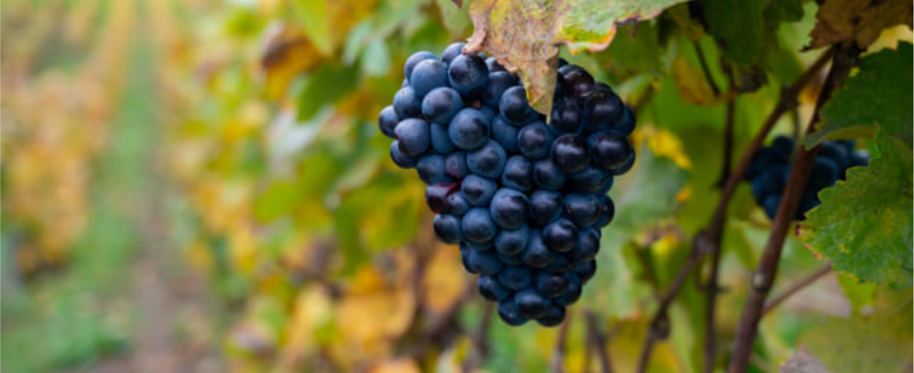
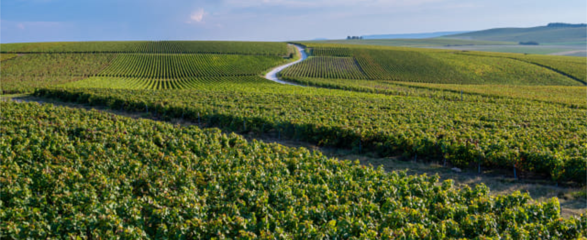

Виноград: как вырастить хороший урожай
В былые времена виноград ассоциировался исключительно с югом. Современные сорта продвинулись далеко на север, однако, культура по-прежнему остается прихотливой и требует хорошего ухода. Так что же нужно винограду? Рассказываем все: о выращивании, посадке и уходе в открытом грунте
Выращивание винограда
Теплолюбивость винограда надо учитывать еще до момента его посадки – важно выбрать правильное место: теплое и хорошо освещенное [1]. Идеальный вариант – южные склоны, поскольку весной там почва прогревается гораздо раньше, а летом высокая подпорная стенка обеспечивает максимальное количество света. Отлично, если с северной стороны от винограда будет какая-то защита от холодного ветра – дом, сарай, баня или глухой забор.
– Но не всегда для винограда удается найти подходящий участок, поэтому можно использовать хитрости, – советует ученый-агроном, виноградарь Ольга Монгарова. – Повысить освещенность помогут экраны из фольги – их нужно поставить с северной стороны, и они будут отражать солнце на виноград. А увеличить количество тепла поможет крупные камни, разложенные возле – днем они будут нагреваться, а потом отдавать тепло винограду. Весной, после того как виноград будет раскрыт, почву вокруг него можно укрыть полиэтиленом – так она быстрее прогреется.

Что касается почвы, то здесь виноград неприхотлив – в теплых странах его часто сажают в таких местах, где другие культуры расти не способны – бедные песчаные или каменистые участки для него норма. И кстати, подмечено, что в таких местах он обильнее плодоносит и лучше зимует – на бедных почвах лиана вызревает быстрее и тратит больше сил на созревание урожая, а то время как на плодородных почвах идет активное наращивание зеленой массы. Не любит виноград только очень плотную глинистую почву (в ней он практически не растет) и излишне кислую (с рН меньше 5).
Особенности сорта
Сроки посадки винограда зависят от саженца, а они бывают двух видов:
- одревесневшие: их выращивают в течение лета, осенью выкапывают, хранят в погребе, а весной продают в состоянии покоя – их можно высаживать с середины апреля до середины мая;
- вегетативные: они посажены весной в контейнеры и продаются с активно растущими побегами – их высаживают после 20 мая, а еще лучше после 10 июня, потому что такие саженцы боятся заморозков
Вегетативные саженцы можно сажать в течение всего лета и осенью, но не позднее середины октября – им надо время, чтобы укорениться до наступления морозов.
– При осенней посадке почву необходимо замульчировать, чтобы промерзала она не так быстро, – советует Ольга Монгарова. – А укрывать виноград надо, когда минусовые температуры будут и днем, и ночью.
Укрыть лозу и замульчировать виноград и нужно обязательно, потому что морозостойкость у этой культуры очень низкая. Побеги зимой выдерживают кратковременные морозы – 15 – 18 °С, корни гибнут уже при –7 °С.
Схемы посадки винограда зависят от типа шпалер, на которых его планируется выращивать, но самый простой вариант – плоские вертикальные опоры. В таком случае расстояние между рядами должно быть около 2 м, а между растениями в ряду – 3 м. Если виноград планируют формировать на арке, то расстояние должно быть так же 3 м. Яму под виноград копают глубиной 40 – 50 см и диаметром 60 – 70 см.
Уход за виноградом в открытом грунте

Полив. Оптимальный вариант – поливать виноград 1 раз в неделю. Норма – 2 ведра на молодое растение, 4 – на взрослое. Вода должна быть теплая, особенно это важно весной, когда почва еще холодная.
Если нет возможности поливать каждую неделю, можно организовать четырьмя за сезон:
- в конце мая – начале июня;
- за неделю до цветения;
- сразу после цветения;
- за неделю до укрытия в зиму – это так называемый влагозарядковый полив, он поможет повысить зимостойкость винограда
Подкормки. Как мы помним, виноград лучше растет и плодоносит на бедных почвах, поэтому кормить его надо очень скудно. В первый год после посадки подкормки не нужны вообще. Со второго года достаточно одной за сезон – осенью: 1 ведро перегноя и 1 стакан золы на 1 кв. м. Удобрения надо равномерно разбросать в 1 м от кустов (именно на таком расстоянии у винограда активные корни) и перекопать.
Сбор урожая винограда

Виноград собирают, когда ягоды полностью созреют. Но затягивать с уборкой не стоит, потому что перезревшие плоды теряют свои качества.
Грозди лучше всего срезать секатором. Если они предназначены для хранения, важно брать их в руку аккуратно, чтобы не стереть с ягод восковой налет.
Убирать урожай надо в сухую погоду – это особенно важно для хранения. Грозди, собранные после дождя, долго храниться не будут.